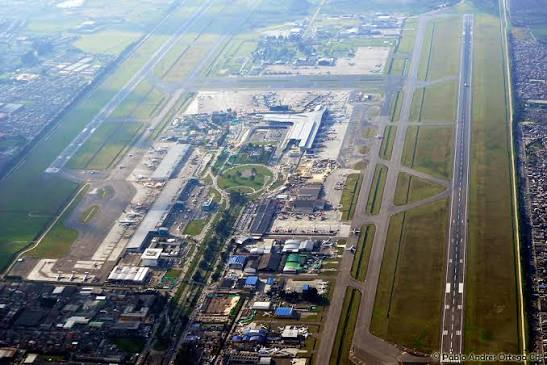

Depuis Genève
Pour rejoindre Bogota depuis Genève avec l'option combinée Iberia et Avianca, le voyage s'effectue en deux étapes avec une seule escale à Madrid.
Vous décollez d'abord de l'aéroport de Genève (GVA, Terminal 1) à bord d'un vol européen opéré par Iberia à destination de l'aéroport Madrid-Barajas (MAD), pour un premier trajet d'environ 2 h 05.
À votre arrivée au Terminal 4 (T4) de Madrid, la correspondance s'organise au sein du même complexe : vos bagages en soute sont acheminés automatiquement jusqu'à la destination finale (lorsque le billet est réservé en une seule fois), et il vous suffit de passer le contrôle des passeports de sortie de l'espace Schengen puis d'emprunter la navette automatique souterraine reliant le T4 au bâtiment satellite T4S.
Vous embarquez ensuite sur un vol long-courrier direct opéré par Avianca reliant Madrid à l'aéroport international El Dorado de Bogota (BOG, Terminal 1) en environ 10 h 25, pour une durée totale de voyage généralement comprise entre 14 h et 15 h selon le temps d'escale.
